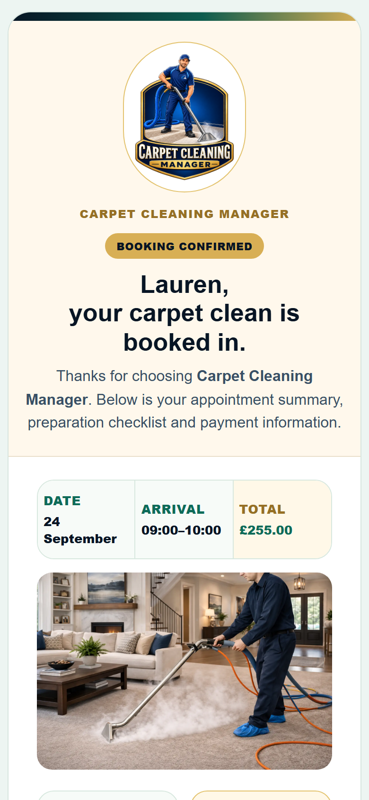

A five-minute first response gets the conversation started.
Rooms, upholstery, cleaning methods and extras.
Reminders, Google reviews and repeat-cleaning follow-ups.
Your working day.
Your business. In your pocket.
Most carpet cleaners aren't sitting behind a desk. You're loading the van, cleaning carpets and moving to the next customer. Your business system needs to fit around that day.
Check the diary between jobs.
See your schedule on your phone, switch between month, week and day, and book the next job from the same place.
Keep the conversation moving.
Automatic responses make first contact while you're working. Open the customer's record when you're ready to check messages, review the quote and decide the next step.
Look professional on their phone, too.
Clear booking confirmations give customers the date, arrival window and price. Your branding follows the customer from their inquiry to their booking.
Follow a customer from start to finish

The customer asks. Your business responds.
When you’re out cleaning, inquiries still need attention. Bring the customer into a clear process that collects the cleaning list, prepares a quote and keeps the next step visible.
From form to conversation
See the website form, automated response and customer reply working together.
02 · PRICE THE WORKFrom cleaning list to quote
Use your own package rates and cleaning methods to prepare a quote you can review.
03 · KEEP THE CUSTOMERFrom booking to repeat business
Confirm the appointment, ask for a review and invite them back.
Know exactly who needs your attention.
Your dashboard brings the work together. New inquiries, customer replies, quote drafts and follow-ups each have a place.

Stop searching your phone. Start with the customer.
Their messages, their cleaning request and their history—all together in their customer record. Choose to send an email, text or reminder yourself, or use your automated follow-ups.
Explore customer messagesIllustrative message history
Carpet cleaning has its own way of working.
First-room rates. Additional rooms. Hall, stairs and landing. Sofas by the seat. Different cleaning methods. This system is built around those details.
See what’s included Explore the sales training